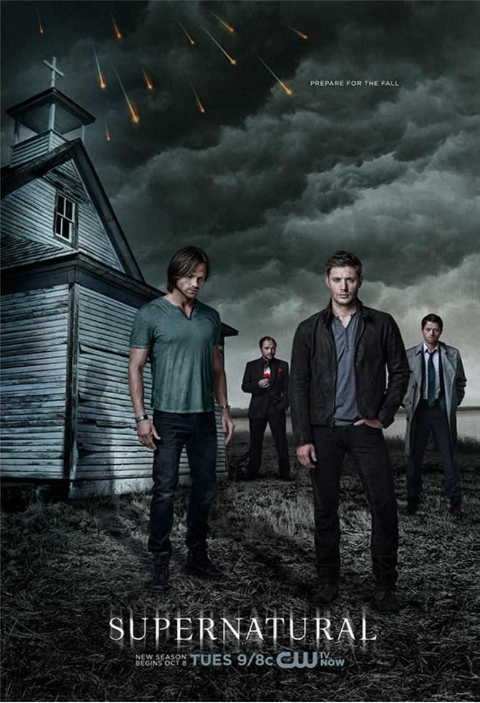
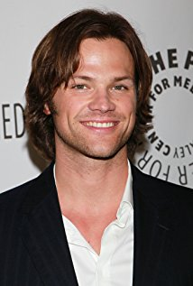
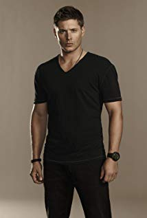
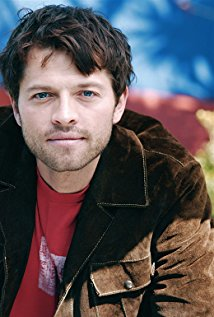
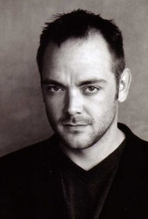
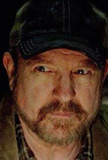

Après la mort de leur mère, tuée par un démon, les frères Winchester sont initiés à l’art de la chasse par leur père, déterminé à retrouver le démon responsable. Las de ce train de vie, Sam a préféré retourner à une vie normale, mais il est forcé de reprendre les armes lorsque son frère Dean refait irruption dans son existence. De nouveau sur la route pour lutter contre des menaces diverses, ils ne se doutent pas encore qu’ils sont au centre d’une vaste lutte entre les forces du Bien et du Mal. Un combat qui ne semble jamais se terminer…

Synopsis
Acteurs Principaux

Jared Padalecki
Rôle : Sam Winchester

Jensen Ackles
Rôle : Dean Winchester

Misha Collins
Rôle : Castiel

Mark Sheppard
Rôle : Crowley

Jim Beaver
Rôle : Bobby Singer
8,5/10
Critique presse
Les scénaristes ont pris l’habitude de régulièrement supprimer les personnages devenus récurrents, occasionnant de nouvelles épreuves aux deux frères qui se retrouvent à chaque fois seuls. Une tendance qui permet certes d’apporter de nouvelles têtes –comme la géniale geek lesbienne jouée par Felicia Day- et d’émouvoir, mais peut-être parfois un peu trop poussée. D’ailleurs, après tant d’années, les Winchester en ont tellement pris plein la tronche, ont tellement souffert, désespéré, culpabilisé, connu des repos trop éphémères, qu’on en vient à souhaiter qu’enfin ils se reposent et sauvent le monde une bonne fois pour toute. Mais tant que la qualité se maintient, nous sommes demandeurs ! De toute façon, comme l’a dit le Prophète, « les fins sont toujours difficiles à écrire, car les fans ne sauront jamais satisfaits »